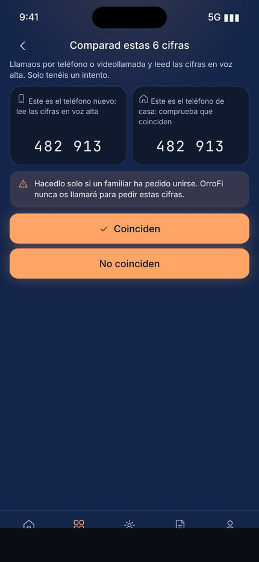

Новый телефон показывает QR
Экран fam-13a · Семья

Безопасное добавление телефона близких в домашнюю сеть.
Экран fam-13a · Семья
Экран fam-13a2 · Семья

Экран fam-13b · Семья

Экран fam-13c · Семья

Экран fam-13d · Семья

Экран fam-13e · Семья

Экран fam-14a · Семья

Экран fam-14b · Семья

Экран fam-15 · Семья

Экран fam-15b · Семья

Экран fam-15c · Семья

Экран fam-list · Семья